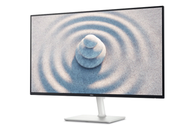

Monitor
Opis: Monitor to urządzenie wyjściowe, które wyświetla obraz generowany przez komputer. Jego kluczowe cechy to rozdzielczość (np. Full HD, 4K), przekątna ekranu oraz częstotliwość odświeżania (Hz). Ma ogromny wpływ na komfort pracy i jakość obrazu. Przykłady to Dell UltraSharp U2720Q, LG 27GP850 czy Samsung Odyssey G5.
